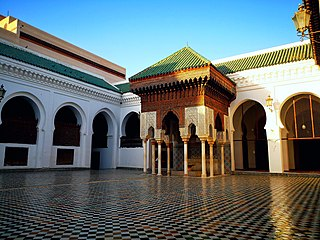

Meknes
Meknes
economic pole in the region of Fès-Meknès

Meknes (Arabic: مكناس, romanized: maknās, pronounced [maknaːs]; Berber languages: ⴰⵎⴽⵏⴰⵙ, romanized: amknas; French: Meknès) is one of the four Imperial cities of Morocco, located in northern central Morocco and the sixth largest city by
population in the kingdom. Founded in the 11th century by the Almoravids as a military settlement, Meknes became the capital of Morocco under the reign of Sultan Moulay Ismaïl (1672–1727), son of the founder of the Alaouite dynasty. Moulay Ismaïl created a massive imperial palace complex and endowed the city with extensive fortifications and monumental gates.[7] The city recorded a population of 632,079 in the 2014 Moroccan census.[6] It is the seat of Meknès Prefecture and an important economic pole in the region of Fès-Meknès.
Reservé